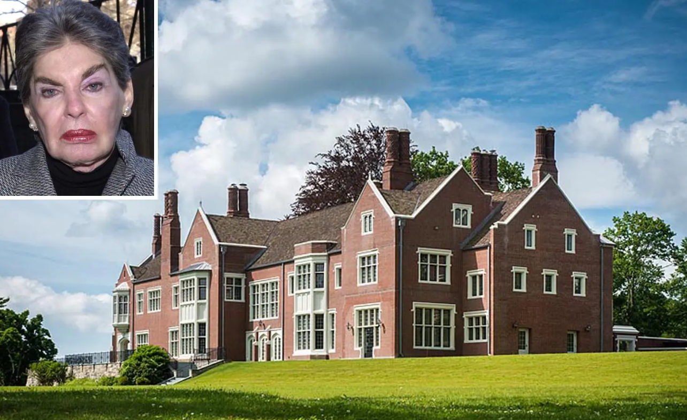

Now we ask you to carefully read the text on the next screen. The text provides the stories of two Americans to describe the challenge of wealth inequality in the United States. Please read the entire text as it may be relevant to subsequent questions in the survey.

“We don’t pay taxes. Only the little people pay taxes”
These were the words of New York hotel tycoon Leona Helmsley, who was listed by Forbes among the 400 richest Americans. Helmsley was dubbed ‘The Queen of Mean’ for her tyrannical behavior towards employees who worked at her hotels.
Helmsley was convicted of tax evasion for using millions of company funds to lavishly renovate her mansion including an extravagant $1 million marble dance floor and a 210,000 mahogany card table. At the same time, Helmsley often refused to pay the ordinary workers building her house, but left a $12 million trust fund for her aggressive Maltese dog that had a track record of biting employees and workers.
While Leona Helmsley belonged to the privileged few in American society, many ordinary Americans struggle to get by. Gary earns a small monthly salary working as a line cook and a dishwasher. Gary is a single father fighting to escape poverty and give his little daughter a better future. “I want to get her away from the environment I grew up in”, Gary shared with Chicago’s WTTW station where he told of his dream for his daughter’s future: “I don’t want her to have to struggle with anything – clothes, money, or lights getting shut off. I want her to be proud of her dad.” But Gary is coming to understand how difficult it is to emerge from poverty.
The contrast between the lives of Helmsley’s opulence and Gary’s struggle highlights the deep inequality in America. Wealth inequality is increasing in the United States and will soon surpass that of any other developed country. And yet, in 2018 the richest 400 households in America paid a lower effective tax-rate than the bottom 50%.
But there is hope. Introducing even a small wealth tax for the ultra- richest 0.1% can make more billionaires like Helmsley contribute their fair share to society. This would reduce wealth inequality and help make America a land of opportunity for all, giving every child a better chance to thrive.